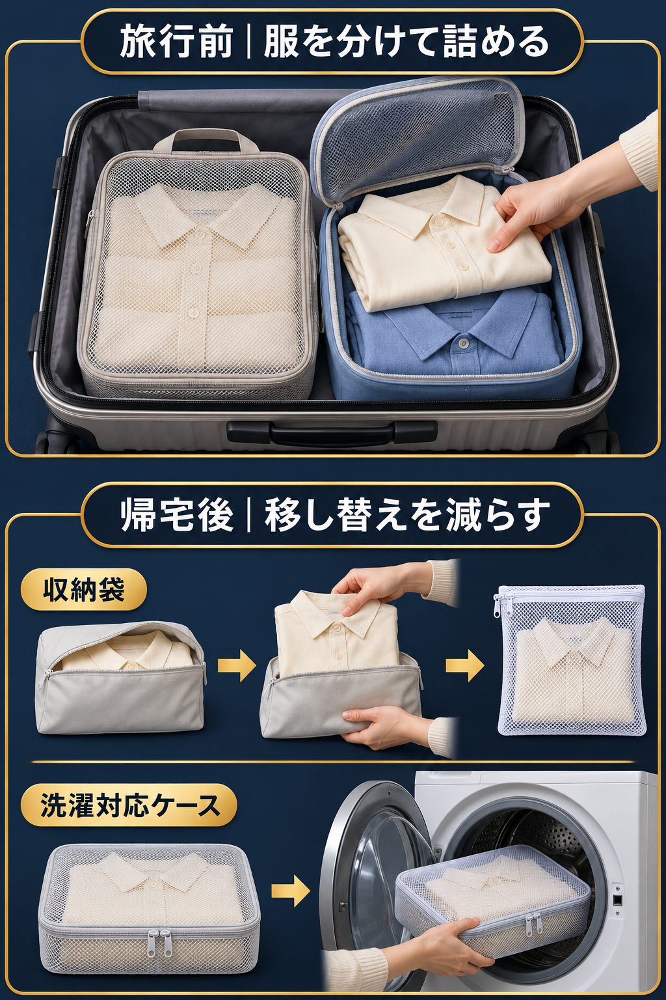

入口は、美容・スキンケアの商品紹介。
保湿クリームなど、日常で使う商品を、使う場面や手元の映像で紹介します。商品を決めたら、同じ型番の使い方と紹介条件を確かめ、自分用の紹介リンクで商品ページへ案内します。
自分で撮れる見本のある商品
商品名で検索。見せる順番を参考にできるので、最初から構成を全部考えずに始められます。
見本を選ぶ → 商品に合わせて一本作る同じ分野の周辺商品や、別の用途
買い手の困りごとがあり、既存の紹介では足りない説明を、自分の映像で補えるか調べます。
説明の足りない点を探す → 自分で撮って伝える僕なら、最初から紹介例が見つからない商品は選びません。一本を作れるようになってから、見本が少ない候補にも広げます。「紹介が少ない」だけでは、使いたい人がいるか分からないからです。
応用例：旅行収納で二つの候補を比べる
同じ探し方は、別の分野でも使えます。ここからは、見本がある商品と、説明が足りない用途を旅行収納で比べます。
応用候補A｜旅行で衣類を仕分ける収納ケース
詰め方を見せる紹介例があり、その手元を自分でも撮れるなら、一本目の候補に。
見本を手掛かりに、作ってみる応用候補B｜帰宅後そのまま洗える衣類ケース
困りごとがあるのに、その場面の説明が見つからないなら、自分で比べて見せられるかを調べる。
既存の紹介で足りない説明を探す
候補Aに撮れる紹介見本があり、候補Bにはその用途の紹介が見つからなかった場合の比較練習です。現在の人気や投稿数を調べた結果ではありません。
応用候補Bでは、どんな疑問に答える？
旅行から帰ったとき、着た服を収納袋から洗濯ネットへ移す。その手間を減らしたいという公開の要望があります。メーカー公式の紹介記事では、そのまま洗える衣類ケースの用途を確認できます。
候補Bで見せるなら、服を移す手順と、ケースに入れたまま洗う手順の違いです。まだ実演できる商品を持っていないなら、同じ型番の洗濯条件と、撮る素材を確かめるところから始めます。
公開要望と公式用途は確認できますが、この商品の売れやすさや、紹介している人の少なさまで分かったわけではありません。
旅行 着た服 洗濯ネット 移し替え 衣類ケース
候補を選んだあと、何を確かめる？
「紹介が少ない」だけで、狙い目とは決めない。
単に使いたい人が少ない商品かもしれません。先に買い手の困りごとを見つけ、その商品でどう答えられるかを確かめます。
困りごと・見本・撮れる素材がある
見せる順番を参考にし、セリフは自分の商品に合わせます。
困りごとはあるが、仕様や素材が足りない
旅行収納の応用候補Bなら、同じ型番で洗える条件と、撮影する場面を調べます。
商品情報で確かめられない効果
「ニオイを閉じ込める」など、確認できない説明を足して目立たせません。
自分の商品では、この順番で調べる
- まず商品名で検索し、公開レビューや質問から、誰が何に困っているかを一つ拾う。
- 最近の紹介動画で、何をどの順番で見せているかを確認する。商品名だけで見本が見つからなければ、「スキンケア」など分野名へ広げる。
- 初めてなら、自分で素材を用意できる見本を探す。一本作れるなら、まだ説明されていない用途を、自分が映像で答えられるか考える。
- 同じ型番の使い方と、紹介サービスの掲載・報酬条件、自分用リンクを確認する。
自分の候補一つと、次に確かめる点を残す
調べた商品を、一本の紹介動画にする
- 選んだ商品で、誰のどの疑問に答えるかを一つ決める。
- 見本から参考にする順番と、自分で撮る場面を決める。
- セリフを同じ型番の商品情報に合わせ、購入条件と自分の紹介リンクを確認する。
- 素材を撮り、話す言葉と映像が合う紹介動画にする。
使う映像は、自分で撮るか、利用を認められたものを用意します。調べた日・確認元・まだ分からない点はメモに残します。
自分の制作段階に合わせて候補を比べ、先に調べる商品とその理由を一つ残します。撮れる素材や紹介条件がまだ分からなくても、次に確かめることが決まれば、この資料での準備は完了です。